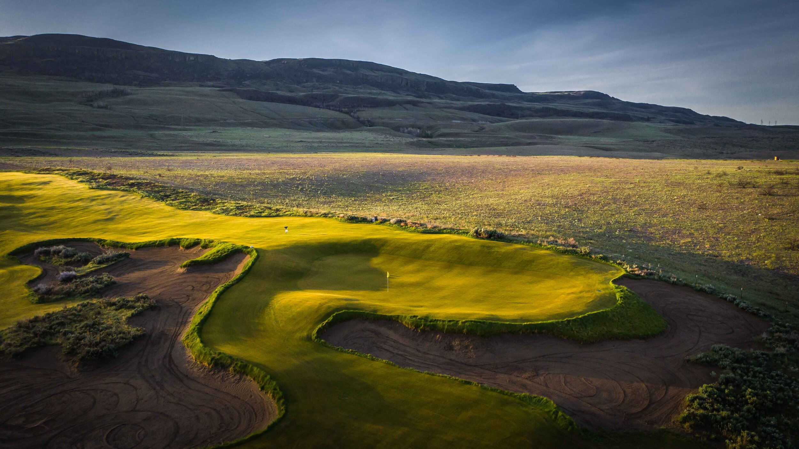
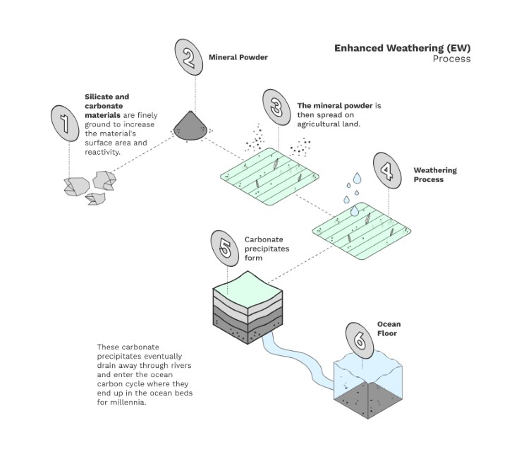

Improving Golf Course Soil Quality & Capturing Atmospheric Carbon Dioxide.
Discover MoreAt Green Golf Carbon, we are redefining turf management. Our patented basalt blend leverages enhanced rock weathering (ERW) to naturally capture atmospheric CO₂, improve soil nutrient profiles, and reduce chemical inputs.

Backed by rigorous field trials and research showcased at AGU and in leading journals, our solution replaces inert quartz sand with a nutrient‐rich basalt blend – making golf courses and turf facilities greener and more sustainable.
Our innovative basalt blend harnesses enhanced rock weathering to improve soil quality and capture atmospheric CO₂.

CO₂ + H₂O + Basalt → Nutrients + Bicarbonate
Co-Founder
Co-Founder
Associate
For any questions, thoughts, concerns, or inquiries, please email brian.morrison@greengolfcarbon.com.